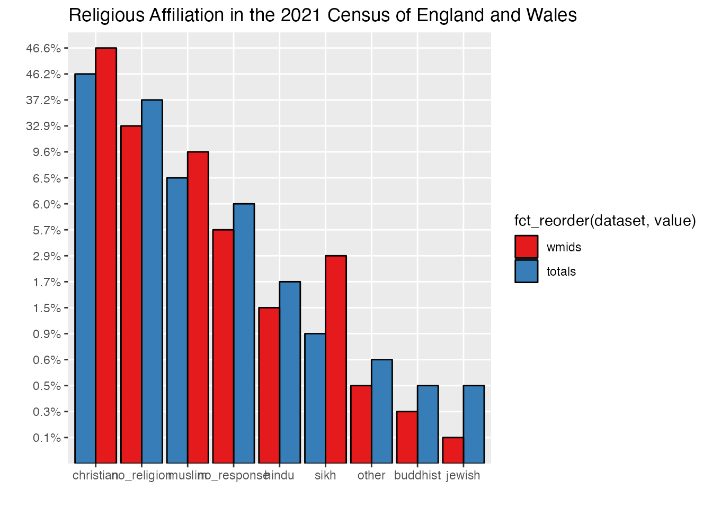
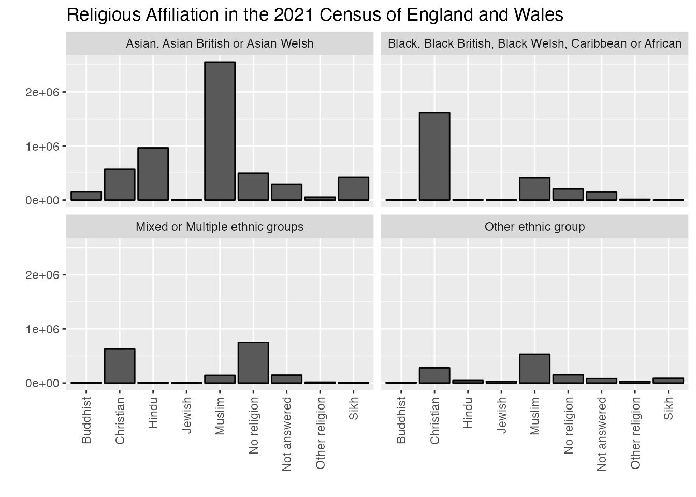

We’ll get to the good stuff in a moment, but first we need to do a bit of setup. The code provided here is intended to set up your workspace and is also necessary for the quarto application we use to build this book. Quarto is an application which blends together text and blocks of code. You can ignore most of it for now, though if you’re running the code as we go along, you’ll definitely want to include these lines, as they create directories where your files will go as you create charts and extract data below and tells R where to find those files:
For our first exercise in this book, we’re going to work with a census dataset. As you’ll see by contrast in chapter 2, census data is intended to represent as fully as possible the demographic features of a specific community, in this case, the United Kingdom. We might assume that a large-scale survey given to 1000 or more respondents and distributed appropriately across a variety of demographics will approximate the results of a census, but there’s really no substitite for a survey which has been given to (nearly) the entire population. This also allows us to compare a number of different subsets, as we’ll explore further below. The big question that we’re confronting in this chapter is how best to represent religious belonging and participation at such a large scale, and to flag up some of the hidden limitations in this seemingly comprehensive dataset.
3 Getting started with UK Census data
Let’s start by importing some data into R. Because R is what is called an object-oriented programming language, we’ll always take our information and give it a home inside a named object. There are many different kinds of objects, which you can specify, but usually R will assign a type that seems to fit best, often a table of data which looks a bit like a spreadsheet which is called a dataframe.
If you’d like to explore this all in a bit more depth, you can find a very helpful summary in R for Data Science, chapter 8, “data import”.
In the example below, we’re going to begin by reading in data from a comma separated value file (“csv”) which has rows of information on separate lines in a text file with each column separated by a comma. This is one of the standard plain text file formats. R has a function you can use to import this efficiently called read.csv. Each line of code in R usually starts with the object, and then follows with instructions on what we’re going to put inside it, where that comes from, and how to format it:
What’s in the table? You can take a quick look at either the top of the data frame, or the bottom using one of the following commands:
head(uk_census_2021_religion)
geography total no_religion christian buddhist hindu jewish
1 North East 2647012 1058122 1343948 7026 10924 4389
2 North West 7417397 2419624 3895779 23028 49749 33285
3 Yorkshire and The Humber 5480774 2161185 2461519 15803 29243 9355
4 East Midlands 4880054 1950354 2214151 14521 120345 4313
5 West Midlands 5950756 1955003 2770559 18804 88116 4394
6 East 6335072 2544509 2955071 26814 86631 42012
muslim sikh other no_response
1 72102 7206 9950 133345
2 563105 11862 28103 392862
3 442533 24034 23618 313484
4 210766 53950 24813 286841
5 569963 172398 31805 339714
6 234744 24284 36380 384627
This is actually a fairly ugly table, so I’ll use an R tool called kable to give you prettier tables in the future, like this:
knitr::kable(head(uk_census_2021_religion))
geography
total
no_religion
christian
buddhist
hindu
jewish
muslim
sikh
other
no_response
North East
2647012
1058122
1343948
7026
10924
4389
72102
7206
9950
133345
North West
7417397
2419624
3895779
23028
49749
33285
563105
11862
28103
392862
Yorkshire and The Humber
5480774
2161185
2461519
15803
29243
9355
442533
24034
23618
313484
East Midlands
4880054
1950354
2214151
14521
120345
4313
210766
53950
24813
286841
West Midlands
5950756
1955003
2770559
18804
88116
4394
569963
172398
31805
339714
East
6335072
2544509
2955071
26814
86631
42012
234744
24284
36380
384627
You can see how I’ve nested the previous command inside the kable command. For reference, in some cases when you’re working with really complex scripts with many different libraries and functions, they may end up with functions that have the same name. You can specify the library where the function is meant to come from by preceding it with :: as we’ve done knitr:: above. The same kind of output can be gotten using tail:
knitr::kable(tail(uk_census_2021_religion))
geography
total
no_religion
christian
buddhist
hindu
jewish
muslim
sikh
other
no_response
5
West Midlands
5950756
1955003
2770559
18804
88116
4394
569963
172398
31805
339714
6
East
6335072
2544509
2955071
26814
86631
42012
234744
24284
36380
384627
7
London
8799728
2380404
3577681
77425
453034
145466
1318754
144543
86759
615662
8
South East
9278068
3733094
4313319
54433
154748
18682
309067
74348
54098
566279
9
South West
5701186
2513369
2635872
24579
27746
7387
80152
7465
36884
367732
10
Wales
3107494
1446398
1354773
10075
12242
2044
66947
4048
15926
195041
5 Parsing and Exploring your data
The first thing you’re going to want to do is to take a smaller subset of a large data set, either by filtering out certain columns or rows. Now let’s say we want to just work with the data from the West Midlands, and we’d like to omit some of the columns. We can choose a specific range of columns using select, like this:
You can use the filter command to do this. To give an example, filter can pick a single row in the following way:
Now we’ll use select in a different way to narrow our data to specific columns that are needed (no totals!).
Some readers will want to pause here and check out Hadley Wickham’s “R For Data Science” book, in the section, “Data visualisation” to get a fuller explanation of how to explore your data.
In keeping with my goal to demonstrate data science through examples, we’re going to move on to producing some snappy looking charts for this data.
6 Making your first data visulation: the humble bar chart
We’ve got a nice lean set of data, so now it’s time to visualise this. We’ll start by making a pie chart:
There are two basic ways to do visualisations in R. You can work with basic functions in R, often called “base R” or you can work with an alternative library called ggplot:
Let’s assume we’re working with a data set that doesn’t include a “totals” column and that we might want to get sums for each column. This is pretty easy to do in R. As you’ll see below, we are going to take the original table, and overwrite it with a new column added:
First, remove the column with region names and the totals for the regions as we want just integer data.
2
Second calculate the totals. In this example we use the tidyverse library dplyr(), but you can also do this using base R with colsums() like this: uk_census_2021_religion_totals <- colSums(uk_census_2021_religion_totals, na.rm = TRUE). The downside with base R is that you’ll also need to convert the result into a dataframe for ggplot like this: uk_census_2021_religion_totals <- as.data.frame(uk_census_2021_religion_totals)
3
In order to visualise this data using ggplot, we need to shift this data from wide to long format. This is a quick job using gather()
4
Now plot it out and have a look!
You might have noticed that these two dataframes give us somewhat different results. But with data science, it’s much more interesting to compare these two side-by-side in a visualisation. We can join these two dataframes and plot the bars side by side using bind() - which can be done by columns with cbind() and rows using rbind():
Do you notice there’s going to be a problem here? How can we tell one set from the other? We need to add in something idenfiable first! This isn’t too hard to do as we can simply create a new column for each with identifiable information before we bind them:
Now we’re ready to plot out our data as a grouped barplot:
ggplot(uk_census_2021_religion_merged, aes(fill=dataset, x=reorder(key,-value), value)) +geom_bar(position="dodge", stat ="identity")
If you’re looking closely, you will notice that I’ve added two elements to our previous ggplot. I’ve asked ggplot to fill in the columns with reference to the dataset column we’ve just created. Then I’ve also asked ggplot to alter the position="dodge" which places bars side by side rather than stacked on top of one another. You can give it a try without this instruction to see how this works. We will use stacked bars in a later chapter, so remember this feature.
If you inspect our chart, you can see that we’re getting closer, but it’s not really that helpful to compare the totals. What we need to do is get percentages that can be compared side by side. This is easy to do using another dplyr feature mutate:
You can find a helpful write-up about dplyr by Antoine Soetewey at, “Stats and R”.
It’s worth noting that an alternative approach is to leave the numbers intact and simply label them differently so they render as percentages on your charts. You can do this with the `scales() library and the label_percent() function. The downside of this approach is that it won’t transfer to tables if you make them.
Now you can see a very rough comparison, which sets bars from the West Midlands data and UK-wide total data side by side for each category. The same principles that we’ve used here can be applied to draw in more data. You could, for example, compare census data from different years, e.g. 2001 2011 and 2021, as we’ll do below. Our use of dplyr::mutate above can be repeated to add an infinite number of further series’ which can be plotted in bar groups.
We’ll draw this data into comparison with later sets in the next chapter. But the one glaring issue which remains for our chart is that it’s lacking in really any aesthetic refinements. This is where ggplot really shines as a tool as you can add all sorts of things.
The ggplot tool basically works by stacking on additional elements using +. So, for example, let’s say we want to improve the colours used for our bars. You can specify the formatting for the fill on the scale by tacking on scale_fill_brewer. This uses a particular tool (and a personal favourite of mine) called colorbrewer. Part of my appreciation of this tool is that you can pick colours which are not just visually pleasing, and produce useful contrast / complementary schemes, but you can also work proactively to accommodate colourblindness. Working with colour schemes which can be divergent in a visually obvious way will be even more important when we work on geospatial data and maps in a later chapter.
ggplot(uk_census_2021_religion_merged, aes(fill=dataset, x=key, y=perc)) +geom_bar(position="dodge", stat ="identity") +scale_fill_brewer(palette ="Set1")
We might also want to add a border to our bars to make them more visually striking (notice the addition of color to the geom_bar below. I’ve also added reorder() to the x value to sort descending from the largest to smallest.
You can find more information about reordering ggplots on the R Graph gallery.
We can fine tune a few other visual features here as well, like adding a title with ggtitle and some prettier fonts with theme_ipsum() (which requires the hrbrthemes() library). We can also remove the x and y axis labels (not the data labels, which are rather important).
ggplot(uk_census_2021_religion_merged, aes(fill=fct_reorder(dataset, value), x=reorder(key,-value),value, y=perc)) +geom_bar(position="dodge", stat ="identity", colour ="black") +scale_fill_brewer(palette ="Set1") +ggtitle("Religious Affiliation in the UK: 2021") +xlab("") +ylab("")
7 Telling the truth in data science: Is your chart accurate?
If you’ve been following along up until this point, you’ll now have produced a fairly complete data visualisation for the UK census. There is some technical work yet to be done fine-tuning the visualisation of our chart here, but I’d like to pause for a moment and consider an ethical question drawn from the principles I outlined in the introduction: is the title of this chart truthful and accurate?
On one hand, it is a straight-forward reference to the nature of the question asked on the 2021 census survey instrument, e.g. something like “what is your religious affiliation”. However, as you will see in the next chapter, large data sets from the same year which asked a fairly similar question yield different results. Part of this could be attributed to the amount of non-respose to this specific question which, in the 2021 census is between 5-6% across many demographics. It’s possible (though perhaps unlikely) that all those non-responses were Sikh respondents who felt uncomfortable identifying themselves on such a survey. If even half of the non-responses were of this nature, this would dramatically shift the results especially in comparison to other minority groups. So there is some work for us to do here in representing non-response as a category on the census.
It’s equally possible that someone might feel uncertain when answering, but nonetheless land on a particular decision marking “Christian” when they wondered if they should instead tick “no religion. Some surveys attempt to capture uncertainty in this way, asking respondents to mark how confident they are about their answers, or allowing respondents to choose multiple answers, but the census hasn’t captured this so we simply don’t know. It’s possible that a large portion of respondents in the”Christian” category were hovering between this and another response, and they might shift their answers when responding on a different day or in the context of a particular experience like a good or bad day attending church, or perhaps having just had a conversation with a friend which shifted their thinking.
Even the inertia of survey design can have an effect on this, so responding to other questions in a particular way, thinking about ethnic identity, for example, can prime a person to think about their religious identity in a different or more focussed way, altering their response to the question. If someone were to ask you on a survey “are you hungry” you might say “no,” but if they’d previously asked you a hundred questions about your favourite pizza toppings you might have been primed to think about food and when you arrive at the same question, even at the same time in the day, answer differently. This can be the case for some ethnicity and religion pairings, which we’ll explore a bit more in the next chapter.
Given this challenge, some survey instruments randomise the order of questions. This hasn’t been done on the census (which would have been quite hard work given that most of the instruments were printed hard copies!), so again, we can’t really be sure if those answers given are stable in such a way.
Finally, researchers have also found that when people are asked to mark their religious affiliation, sometimes they can prefer to mark more than one answer. A person might consider themselves to be “Muslim” but also “Spiritual but not religious” preferring the combination of those identities. It is also the case that respondents can identify with more unexpected hybrid religious identities, such as “Christian” and “Hindu”. One might assume that these are different religions without many doctrinal overlaps, but researchers have found that in actual practice, it’s perfectly possible for people to inhabit two categories which the researcher might assume are opposed.
The UK census only allows respondents to tick a single box for the religion category. It is worth noting that, in contrast, the responses for ethnicity allow for combinations. Given that this is the case, it’s impossible to know which way a person went at the fork in the road as they were forced to choose just one half of this kind of hybrid identity. Did they feel a bit more Buddhist that day? Or spiritual?
Finally, it is interesting for us to consider exactly what it means for a person when they tick a box like this. The census doesn’t specify how one should calculate the basis of your participation. Is it because they attend synagogue on a weekly basis? Some persons would consider weekly attendance at workship a prerequisite for membership in a group, but others would not. Indeed we can infer from surveys and research which aims to track rates of participation in weekly worship that many people who tick boxes for particular religious identities on the census have never attended a worship service at all.
What does this mean for our results? Are they completely unreliable and invalid? I don’t think this is the case or that taking a clear-eyed look at the force and stability of our underlying data should be cause for despair. Instead, the most appropriate response is humility. Someone has made a statement which is recorded in the census, of this we can be sure. They felt it to be an accurate response on some level based on the information they had at the time. And with regard to the census, it is a massive dataset, covering much of the population, and this large sample size does afford some additional validity. The easiest way to represent all this reality in the form of speaking truthfully about our data is to acknowledge that however valid it may seem, it is nonetheless a snapshot. For this reason, I would always advise that the best title for a chart is one which specifies the data set.
So if we are going to fine-tune our visuals to ensure they comport with our hacker principles and speak truthfully, we should also probably do something different with those non-responses:
ggplot(uk_census_2021_religion_merged, aes(fill=fct_reorder(dataset, value), x=reorder(key,-value),value, y=perc)) +geom_bar(position="dodge", stat ="identity", colour ="black") +scale_fill_brewer(palette ="Set1") +ggtitle("Religious Affiliation in the 2021 Census of England and Wales") +xlab("") +ylab("")

8 Multifactor Visualisation
One element of R data analysis of census datasets that can get really interesting is working with multiple variables. Above we’ve looked at the breakdown of religious affiliation across the whole of England and Wales (Scotland operates an independent census), and by placing this data alongside a specific region, we’ve already made a basic entry into working with multiple variables but this can get much more interesting. Adding an additional quantitative variable (also known as bivariate data when you have two variables) into the mix, however can also generate a lot more information and we have to think about visualising it in different ways which can still communicate with visual clarity in spite of the additional visual noise which is inevitable with enhanced complexity. Let’s have a look at the way that religion in England and Wales breaks down by ethnicity.
What is Nomis?
For the UK, census data is made available for programmatic research like this via an organisation called NOMIS. Luckily for us, there is an R library you can use to access nomis directly which greatly simplifies the process of pulling data down from the platform. It’s worth noting that if you’re not in the UK, there are similar options for other countries. Nearly every R textbook I’ve ever seen works with USA census data, so you’ll find plenty of documentation available on the tools you can use for US Census data. Similarly for the EU, Canada, Austrailia etc.
If you want to draw some data from the nomis platform yourself in R, have a look at the nomis script in our companion cookbook repository. For now, we’ll provide some data extracts for you to use.
Let’s start by loading in some of the enhanced tables from nomis with the 2021 religion / ethnicity tables:
I’m hoping that readers of this book will feel free to pause along the way and “hack” the code to explore questions of their own, perhaps in this case probing the NOMIS data for answers to their own questions. If I tidy things up too much, however, you’re likely to be surprised when you get to the real life data sets. So that you can use the code in this book in a reproducible way, I’ve started this exercise with what is a more or less raw dump from NOMIS. This means that the data is a bit messy and needs to be filtered down quite a bit so that it only includes the basic stuff that we’d like to examine for this particular question. The upside of this is that you can modify this code to draw in different columns etc.
1uk_census_2021_religion_ethnicity <-select(nomis_extract_census2021, GEOGRAPHY_NAME, C2021_RELIGION_10_NAME, C2021_ETH_8_NAME, OBS_VALUE)2uk_census_2021_religion_ethnicity <-filter(uk_census_2021_religion_ethnicity, GEOGRAPHY_NAME=="England and Wales"& C2021_RELIGION_10_NAME !="Total"& C2021_ETH_8_NAME !="Total")3uk_census_2021_religion_ethnicity <-filter(uk_census_2021_religion_ethnicity, C2021_ETH_8_NAME !="White: English, Welsh, Scottish, Northern Irish or British"& C2021_ETH_8_NAME !="White: Irish"& C2021_ETH_8_NAME !="White: Gypsy or Irish Traveller, Roma or Other White")4ggplot(uk_census_2021_religion_ethnicity, aes(fill=C2021_ETH_8_NAME, x=C2021_RELIGION_10_NAME, y=OBS_VALUE)) +geom_bar(position="dodge", stat ="identity", colour ="black") +scale_fill_brewer(palette ="Set1") +ggtitle("Religious Affiliation in the 2021 Census of England and Wales") +xlab("") +ylab("") +theme(axis.text.x =element_text(angle =90, vjust =0.5, hjust=1))
1
Select relevant columns
2
Filter down to simplified dataset with England / Wales and percentages without totals
3
The 2021 census data includes white sub-groups so we need to omit those
4
Let’s plot it out and see how things look!
The trouble with using grouped bars here, as you can see, is that there are quite sharp disparities which make it hard to compare in meaningful ways. We could use logarithmic rather than linear scaling as an option, but this is hard for many general public audiences to appreciate without guidance. One alternative quick fix is to extract data from “white” respondents which can then be placed in a separate chart with a different scale.
Statistics 101: Logarithmic Visualisation
Content TBD.
1uk_census_2021_religion_ethnicity_white <-filter(uk_census_2021_religion_ethnicity, C2021_ETH_8_NAME =="White")2uk_census_2021_religion_ethnicity_nonwhite <-filter(uk_census_2021_religion_ethnicity, C2021_ETH_8_NAME !="White")3ggplot(uk_census_2021_religion_ethnicity_nonwhite, aes(fill=C2021_ETH_8_NAME, x=C2021_RELIGION_10_NAME, y=OBS_VALUE)) +geom_bar(position="dodge", stat ="identity", colour ="black") +scale_fill_brewer(palette ="Set1") +ggtitle("Religious Affiliation in the 2021 Census of England and Wales") +xlab("") +ylab("") +theme(axis.text.x =element_text(angle =90, vjust =0.5, hjust=1))
1
Filter down to simplified dataset with England / Wales and percentages without totals
2
Filtering with != allows us to create a subset where that response is excluded
3
Let’s plot it out and see where we’ve gotten to!
As you’ll notice, this is a bit better, but this still doesn’t quite render with as much visual clarity and communication as I’d like. For a better look, we can use a technique in R called “faceting” to create a series of small charts which can be viewed alongside one another. This is just intended to whet you appetite for facetted plots, so I won’t break down all the separate elements in great detail as there are other guides which will walk you through the full details of how to use this technique if you want to do a deep dive. For now, you’ll want to observe that we’ve augmented the ggplot with a new element called facet_wrap which takes the ethnicity data column as the basis for rendering separate charts.
ggplot(uk_census_2021_religion_ethnicity_nonwhite, aes(x=C2021_RELIGION_10_NAME, y=OBS_VALUE)) +geom_bar(position="dodge", stat ="identity", colour ="black") +facet_wrap(~C2021_ETH_8_NAME, ncol =2) +scale_fill_brewer(palette ="Set1") +ggtitle("Religious Affiliation in the 2021 Census of England and Wales") +xlab("") +ylab("") +theme(axis.text.x =element_text(angle =90, vjust =0.5, hjust=1))

That’s a bit better! Now we have a much more accessible set of visual information which compares across categories and renders most of the information we’re trying to capture.
To take this chart just one step further, I’d like to take the faceted chart we’ve just done and add in totals for the previous two census years (2001 and 2011) so we can see how trends are changing in terms of religious affiliation within ethnic self-identification categories. We’ll draw on some techniques we’re already developed above using rbind() to connect up each of these charts (after we’ve added a column identifying each chart by the census year). We will also need to use one new technique to change the wording of ethnic categories as this isn’t consistent from one census to the next and ggplot will struggle to chart things if the terms being used are exactly the same. We’ll use mutate() again to accomplish this with some slightly different code.
First we need to get the tables of Census 2011 and 2001 religion data from nomis:
Filter down to simplified dataset with England / Wales and percentages without totals
3
Drop unnecessary columns
The bind tool we’re going to use is very picky and expects everything to match perfectly so that it don’t join up data that is unrelated. Unfortunately, the census table data format has changed in each decade, so we need to harmonise the column titles so that we can join the data and avoid confusing R.
First we add a column to each dataframe letting us know which census year it is from so we don’t lose track of the census it comes from when they’re all combined into a single table.
2
Next, we tidy the names of each column by overwriting them all with more legible versions.
Now that we have column titles all sorted, we also need to adjust the category descriptions as the formatting has also changed in subsequent decades. To do this, we’ll use the very handy tool mutate which is a bit like a “find and replace text” tool in R:
# Next we need to change the terms using mutate()uk_census_2001_religion_ethnicity <- uk_census_2001_religion_ethnicity %>%mutate(Ethnicity =str_replace_all(Ethnicity, pattern ="^White: Total$", replacement ="White")) %>%mutate(Ethnicity =str_replace_all(Ethnicity, pattern ="^Mixed: Total$", replacement ="Mixed")) %>%mutate(Ethnicity =str_replace_all(Ethnicity, pattern ="^Asian: Total$", replacement ="Asian")) %>%mutate(Ethnicity =str_replace_all(Ethnicity, pattern ="^Black or Black British: Total$", replacement ="Black")) %>%mutate(Ethnicity =str_replace_all(Ethnicity, pattern ="^Chinese or Other ethnic group: Total$", replacement ="Other"))uk_census_2011_religion_ethnicity <- uk_census_2011_religion_ethnicity %>%mutate(Ethnicity =str_replace_all(Ethnicity, pattern ="^White: Total$", replacement ="White")) %>%mutate(Ethnicity =str_replace_all(Ethnicity, pattern ="^Mixed/multiple ethnic group: Total$", replacement ="Mixed")) %>%mutate(Ethnicity =str_replace_all(Ethnicity, pattern ="^Asian/Asian British: Total$", replacement ="Asian")) %>%mutate(Ethnicity =str_replace_all(Ethnicity, pattern ="^Black/African/Caribbean/Black British: Total$", replacement ="Black")) %>%mutate(Ethnicity =str_replace_all(Ethnicity, pattern ="^Other ethnic group: Total$", replacement ="Other"))uk_census_2021_religion_ethnicity <- uk_census_2021_religion_ethnicity %>%mutate(Ethnicity =str_replace_all(Ethnicity, pattern ="^White: Total$", replacement ="White")) %>%mutate(Ethnicity =str_replace_all(Ethnicity, pattern ="^Mixed or Multiple ethnic groups$", replacement ="Mixed")) %>%mutate(Ethnicity =str_replace_all(Ethnicity, pattern ="^Asian, Asian British or Asian Welsh$", replacement ="Asian")) %>%mutate(Ethnicity =str_replace_all(Ethnicity, pattern ="^Black, Black British, Black Welsh, Caribbean or African$", replacement ="Black")) %>%mutate(Ethnicity =str_replace_all(Ethnicity, pattern ="^Other ethnic group$", replacement ="Other"))
Now that we have all the columns and data in formats which will match for merge, let’d do the merge! This is only two (rather than three operations) as we combine 2021 and 2011 and then do a second combine that grafts in the 2001 data:
Hopefully if everything went properly, we can now do an initial ggplot to see how things look side-by-side:
ggplot(uk_census_merged_religion_ethnicity_nonwhite, aes(fill=Year, x=Religion, y=Value)) +geom_bar(position="dodge", stat ="identity", colour ="black") +facet_wrap(~Ethnicity, ncol =2) +scale_fill_brewer(palette ="Set1") +ggtitle("Religious Affiliation in the 2001-2021 Census of England and Wales") +xlab("") +ylab("") +theme(axis.text.x =element_text(angle =90, vjust =0.5, hjust=1))
We’re getting there, but as you can see there are a few formatting issues which remain. Our y-axis number labels are in scientific format which isn’t easy to read. You can use the very powerful and flexible scales() library to bring in some more readable formatting of numbers in a variety of places in R including in ggplot visualizations.
library(scales) |>suppressPackageStartupMessages()ggplot(uk_census_merged_religion_ethnicity_nonwhite, aes(fill=Year, x=Religion, y=Value)) +geom_bar(position="dodge", stat ="identity", colour ="black") +facet_wrap(~Ethnicity, ncol =2) +scale_fill_brewer(palette ="Set1") +scale_y_continuous(labels =unit_format(unit ="M", scale =1e-6), breaks =breaks_extended(8)) +ggtitle("Religious Affiliation in the 2001-2021 Census of England and Wales") +xlab("") +ylab("") +theme(axis.text.x =element_text(angle =90, vjust =0.5, hjust=1))
This chart shows an increase in almost every category for each decade, though it’s a bit hard to read in some cases. However, if we attend to our hacker principles, there’s another element here which can produce some misleading information. Consider for a moment how this information is based on the increase in raw numbers. It’s possbile that the numbers for each religion category may be going up, but population levels are also rising, and it’s possible here that the percentage share for a particular category may have gone up a bit less than population increase, e.g. the share of the population for that category has actually gone down. This is easy to fix and provide some more accurate information by normalising those figures based on the share of overall population for each decade. Let’s transform and visualise our data as percentages to see what kind of trends we can actually isolate:
uk_census_merged_religion_ethnicity <- uk_census_merged_religion_ethnicity %>%group_by(Ethnicity, Year) %>% dplyr::mutate(Percent = Value/sum(Value))ggplot(uk_census_merged_religion_ethnicity, aes(fill=Year, x=Religion, y=Percent)) +geom_bar(position="dodge", stat ="identity", colour ="black") +facet_wrap(~Ethnicity, scales="free_x") +scale_fill_brewer(palette ="Set1") +scale_y_continuous(labels = scales::percent) +ggtitle("Religious Affiliation in the 2001-2021 Censuses of England and Wales") +xlab("") +ylab("") +theme(axis.text.x =element_text(angle =90, vjust =0.5, hjust=1))
Now you can see why this shift is important - the visualisation tells a completely different story in some cases across the two different charts. In the first, working off raw numbers we see a net increase in Christianity across all categories. But if we take into account the fact that the overall share of population is growing for each of these groups, their actual composition is changing in a different direction. The proportion of each group is declining across the three census periods (albeit with an exception for the “Other” category from 2011 to 2021).
To highlight a few of the technical features I’ve added for this final plot, I’ve used a specific feature within facet_wrapscales = "free_x" to let each of the individual facets adjust the total range on the x-axis. Since we’re looking at trends here and not absolute values, having correspondence across scales isn’t important and this makes for something a bit more visually tidy. I’ve also shifted the code for scale_y_continuous to render values as percentages (rather than millions).
In case you want to print this plot out and hang it on your wall, you can use the ggsave tool to render the chart as an image file which you can print or email to a friend (or professor!):
uk_census_merged_religion_ethnicity_plot <-ggplot(uk_census_merged_religion_ethnicity, aes(fill=Year, x=Religion, y=Percent)) +geom_bar(position="dodge", stat ="identity", colour ="black") +facet_wrap(~Ethnicity, scales="free_x") +scale_fill_brewer(palette ="Set1") +scale_y_continuous(labels = scales::percent) +ggtitle("Religious Affiliation in the 2001-2021 Censuses of England and Wales") +xlab("") +ylab("") +theme(axis.text.x =element_text(angle =90, vjust =0.5, hjust=1))ggsave("figures/chart.png", plot=uk_census_merged_religion_ethnicity_plot, width =8, height =10, units=c("in"))
That’s a pretty good day’s work. We’ve covered bifactorial analysis of the census data, compared this across years, and checked in each case to be sure that we’re representing the data accurately in the various visual elements of our charts. For the next chapter, we’re going to explore a wider range of ways to measure and represent religion.
In the meantime, if you want to download the R code without all the commentary here so you can try running it in a browser, you can download that from the cookbook repository.